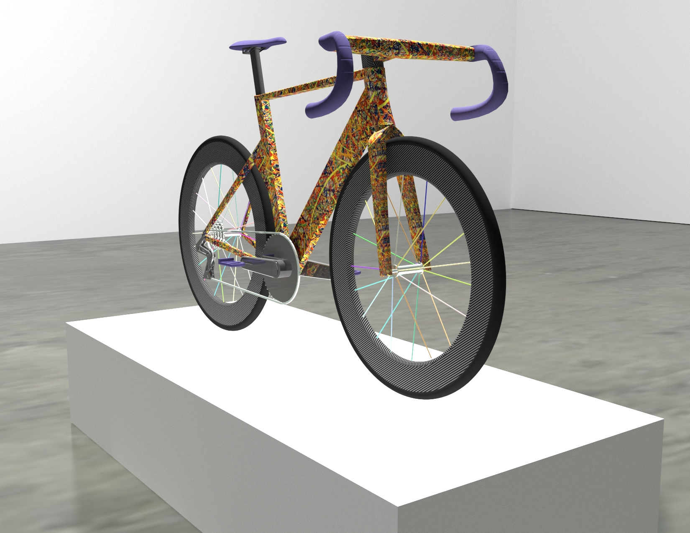

Ryan Biette
I am currently a junior at Tufts University in the School of Engineering pursuing a Bachelor's of Science in Human Factors Engineering and a minor in Entrepreneurial Studies from the Gordon Institute. My other academic concentrations are Environmental Studies, Urban Planning and Computer Science. In my career, I hope to create solutions and products that make positive impacts in people's lives in a sustainable and meaningful way.
Experience
Crew Member
Adventure Food Company
Monitoring/Data Analyst Intern
Solar Energy Installation and Maintenance
Engineering Intern
Agricultural Technology Start-up
Mathematics Tutor
Tutor mathematics topics to local middle and high school students
Education
Tufts University School of Engineering
GPA: 3.63
Middlebury Union High School
Skills
- Engineering Psychology
- Computer Aided Design
- Web Programming
- Data Structures
- Materials Science
- Environmental Economics
- Human Factors Product Design
- User Interface Design
Interests
Outside of school and work, I love biking (road and mountain), backcountry skiing, and playing music. I play the baritone and alto saxophone mostly with smaller groups such as the Bristol Community Town Band. Issues that I am particularly passionate about include affordable housing, climate change, and education.
Growing up in New England, the outdoors has shaped me into who I am and is why I enjoy living sustainably. I enjoy reading about topics such as environmental science, emerging technologies, economics, and psychology.
Portfolio
- Final Design Project for Computer Aided Design Class I modeled this using the Autodesk Suite. My idea started from an existing bicycle, but I modeled the entire piece from scratch. To see the animation, click here. The process involved sketches on paper, followed by iterations of each part in modeling software.
- Tufts Student Solar ProjectI am a part of the Tufts Energy Group and a project to make solar more accessible has been talked about for about two years. In the summer of 2017, I took over as the lead of the project. Working with a local solar installer, Tufts facilities and Tufts administration members, and most importantly Tufts students. Construction has just started and the system as shown is slated to be fully installed by May 2018 for students to engage with and learn about solar technology.
- Department of Energy Solar Decathlon - Team Middlebury CollegeI volunteered to construct Team Middlebury College's entry into the Department of Energy's 2013 Solar Decathlon. Our house (pictured here) placed eighth in the world in the competition, facing competitors such as the country of Austria. The structure includes many user-centered design choices, renewable energy products such as a green roof and is completely self powered. Currently the house is used as specialty student housing. To learn more, click here.
- PedL
 For a class titled, "Entreprenuerial Business Planning", I led a team of three to design a user-friendly, bike routing phone application. What seperated this idea from the normal (GoogleMaps, Strava, etc.) is that the routes were crowdsourced and constantly changing to provide the safest and fastest routes for cyclists in the city. For a summary of the project, click here.
For a class titled, "Entreprenuerial Business Planning", I led a team of three to design a user-friendly, bike routing phone application. What seperated this idea from the normal (GoogleMaps, Strava, etc.) is that the routes were crowdsourced and constantly changing to provide the safest and fastest routes for cyclists in the city. For a summary of the project, click here. - This Website!Using bootstrap and my web programming skills, I designed this website, wrote the code, and published it to the web.